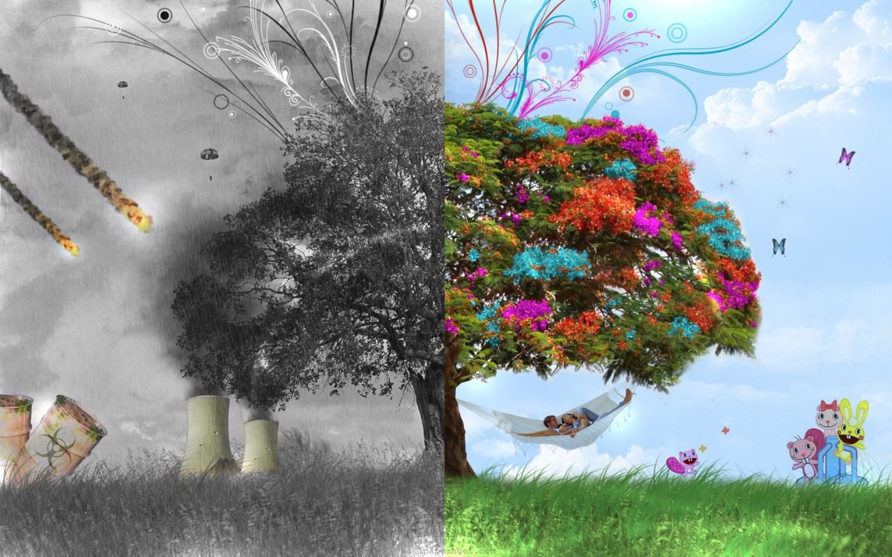

Pure City - bu Oʻzbekistonning bir qator shaharlarida amalga oshirilayotgan innovatsion va ekologik
loyihalarni ifodalovchi umumiy tushuncha. Ushbu loyiha zamonaviy va barqaror shaharlarni
rivojlantirishni maqsad qilgan
Pure city

Toshkentda havoning sezilarli darajada ifloslanishi, birinchi navbatda, turli omillar, jumladan,
sanoat faoliyati, avtomobillar chiqindilarining ko'payishi va isitish uchun ko'mirdan foydalanish
tufayli. Havo sifati, ayniqsa, qishda, qo'shimcha isitish yoqilg'ilarining yonishi zarracha
moddalarning (PM2.5) ko'payishiga hissa qo'shganda yomon bo'ladi, bu esa tez-tez "nosog'lom" va
"juda nosog'lom" havo sifati epizodlariga olib keladi.